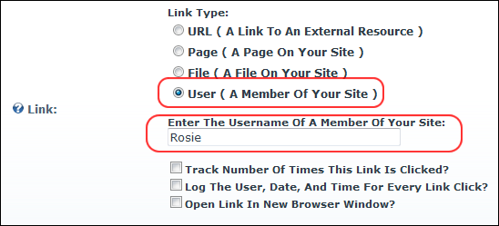
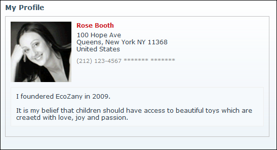

How to set a link to a User Profile using the Link Control. The user can control which profile fields are visible to the public, site members or Administrators only.

Tip: If you enter a username that does not exist in the User Accounts module a message reading "Username entered does not match a User in this web site" is displayed when you attempt to update the item.

The User's Profile